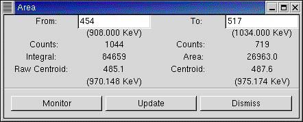

To obtain the Area and Cetroid of a spectrum region, first mark the region by a click and drag of the mouse. Then right-click and select Area. The following Area window will come up:

"From" and "To" indicate the cursor positions defining the ROI. The values here can be corrected by typing over. This allows precise definition of the ROI which is difficult to obtain by moving the cursor. The "Counts" values show the counts at the left and right cursors. "Integral" is the net sum of counts from left cursor to right cursor channels (inclusive). "Area" is obtained after subtracting a linear background from "Integral". The left side of the linear background is obtained as the avearge of 3 channels around the left cursor, and similarly for the right cursor. The next line displays the "Centroid" values, both a "Raw Centroid" and a "Centroid" obtained after subtracting the same linear background. Centroid (centre-of-gravity) is a measure of peak position. (The calibrated values of the Centroid are shown in brackets).
At the bottom there are three buttons:
Monitor: When Mointor is turned on, the Area window will be continuously updated (at the curent Refresh Rate) showing increasing Integral and Area values during acquisition or analysis. (At the time of writing this facility is yet to be implemented).
Update: Instead of monitoring the Area continuously (which loads the system) one can instead leave the Area window open and click "Update" from time-to-time.
Dismiss: It is important to dismiss this window (similarly other such windows) when not required. While this window is open, other functions (including Area for some other spectrum) are disabled.
Note: The operation of the "Area" function (and other functions) causes a new window to be opened. It is arranged that this window cannot be hidden by the spectrum window to which it corresponds. However, it can be hidden by other windows. This will result in other functions being disabled. If this happens, it is required to bring the Area window on top using the Window Manager and Dismiss it.